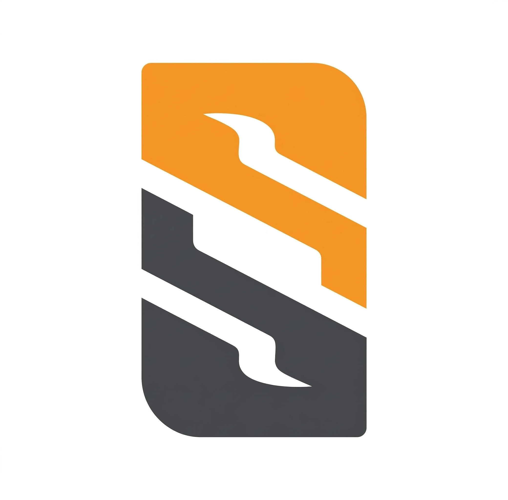
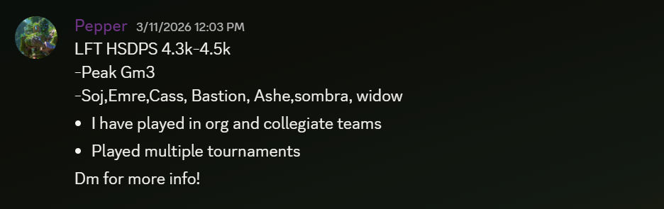
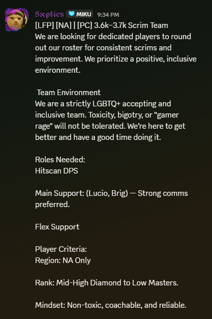
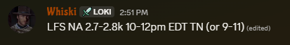
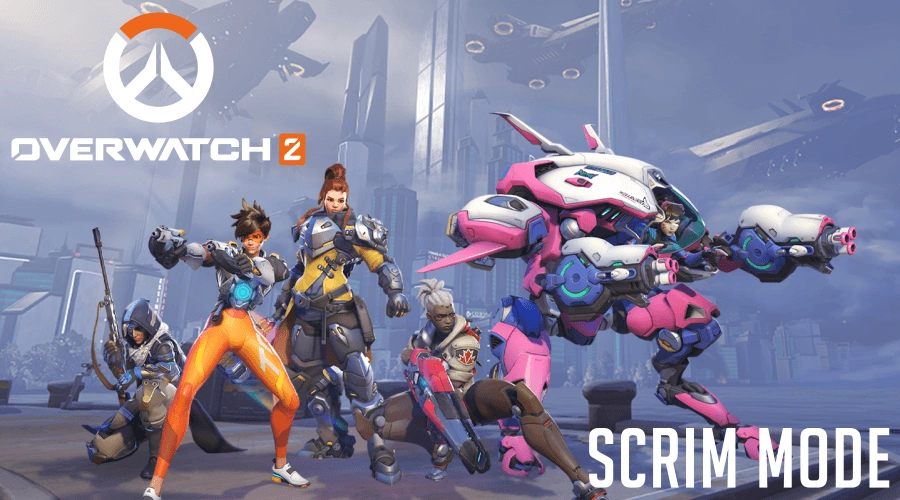

What are Overwatch Scrims?
Overwatch Scrims are casual practice games, or scrimmages, between two premade teams in a private, custom game. They're a fun way of getting a true, team competitive experience in OW without having to worry about all the randomness of matchmaking and the toxicity of ranked, and a phenomenal way to practice and improve your gameplay, skills, and teamwork.
Scrims focus heavily on team coordination, communication, and strategy and every player coming into one usually has the goal of improving their gameplay and teamwork. While you're expected to have some level of skill, game knowledge, and familiarity with your role(s) (we'll get into that), scrims are all about practicing, trying new things, and improving, so don't worry about being perfect and just focus on having fun and learning!
Who plays Overwatch Scrims?
As long as you enjoy playing Overwatch and want to improve your skills, just about anyone can play scrims! You don't have to a pro player, or even be high ranked, there are scrims for every single rank, role, and skill level so whether you're a Gold 5 flex support or a Champ 1 tank, there are scrims for you! But first, you'll need to know what roles there even are and which one you'll want to play so...
Let's talk about some basic roles:
Depending on if you're playing 5v5 or 6v6, there are 5-6 different roles to choose from and each has their own personal niche within the team. In general, there are 3 main categories, Tanks, Damage, and Support, but each of those has been split up into subroles based on the playstyles of the heroes within them and the different ways they can be played.
-
Tank: These guys are the frontline of the team
and their entire responsibility to the team is creating and
controlling space on the map. They tend to have a lot of health
and abilities that help them mitigate (or reduce/"tank") damage,
but they won't tend to have tons of damage at the same time. If
you're playing 5v5, you'll only have 1 tank on your while in 6v6,
you'll get 2, but each tank will have less health and their
abilities will be a little weaker in 6v6 to balance things out.
These guys are divided into 2 subroles:
-
Main Tank: These guys have high health,
low(ish) damage, and usually have a shield. They're the main
thing taking and maintaining space for your team and they tend
to do it through getting into and staying in the enemy teams
face and using their shield to protect themselves and their
teammates.
- Reinhardt
- Winston
- Ramattra
- Orisa
-
Off Tank: Compared to main tanks, off tanks
tend to have less overall health and way more damage.
They don't tend to have shields but they do tend to have more
mobility, more damage, and ways of "erasing" damage (like
D.Va's defense matrix, Zarya's bubble, or Roadhog's self heal)
to help keep them alive. They tend to take and maintain space
through the damage their damage output and that being too
close to them can be really dangerous.
- D.Va
- Zarya
- Roadhog
- Mauga
-
Main Tank: These guys have high health,
low(ish) damage, and usually have a shield. They're the main
thing taking and maintaining space for your team and they tend
to do it through getting into and staying in the enemy teams
face and using their shield to protect themselves and their
teammates.
-
Damage (DPS): These are the heroes responsible
for dishing out damage to the enemy team and securing kills. They
tend to be your most mechanically intense heroes and have a lot of
different playstyles, but they tend to be pretty squishy and are
easy to kill if they isolate themselves from their team or get
caught out of position. They're divided into 2 subroles:
-
Hitscan Damage (HSDPS): There's a lot of
varience between these heroes, but in general, their main
source of damage will either be a hitscan weapon (where the
projectile is instant and hits exactly where you aim) or will
have a very fast projectile speed that's nearly
instant. Players filling this role tend to need
very good aim and decent positioning to be effective,
but are huge threats if played well.
- Soldier 76
- Tracer
- Sojourn
- Cassidy
-
Flex Damage (FDPS): These are damage dealers
with a lot more variety in their playstyles and kits. They
don't really have a set method of dealing damage and can be
played in a lot of different ways. Mechanically, they don't
tend to be as intesive as hitscans but they do require more
game knowledge and better positioning to be effective. A good
flex dps can absolutely destroy the enemy team if played well.
- Genji
- Tracer
- Pharah
- Venture
- Vendetta
-
Hitscan Damage (HSDPS): There's a lot of
varience between these heroes, but in general, their main
source of damage will either be a hitscan weapon (where the
projectile is instant and hits exactly where you aim) or will
have a very fast projectile speed that's nearly
instant. Players filling this role tend to need
very good aim and decent positioning to be effective,
but are huge threats if played well.
-
Support: These are our healers and utility heroes
and they're really responsible for keeping the team alive and
enabling our teammates to do their jobs. They all have some form
of healing (in varying amounts) and some kind of utility to them
like speed boost, damage boosts, or invincibility. Just like
everything else, they're divided into 2 subroles:
-
Main Support: These are the supports with the
utility that our team compositions are built around. Their
healing doesn't tend to be the greatest but they more than
make up for it with the strength of their utility.
- Lucio
- Brigitte
- Jetpack Cat
- Mizuki
-
Flex Support: These are the more versatile
supports who can adapt to different situations to help their
team deal with whatever problems they're dealing with. They
tend to have stronger healing but also tend to either have
less impactful utility or utility that's much more situational
than main supports.
- Kiriko
- Ana
- Baptist
- Zen
- Juno
-
Main Support: These are the supports with the
utility that our team compositions are built around. Their
healing doesn't tend to be the greatest but they more than
make up for it with the strength of their utility.
These are all the roles you're gonna see in OW scrims and every single player on a team is going to be able to play at least one of these roles. Some other roles you might see on the team are coaches and subs but not all teams will have those and they're not really necessary to play scrims (but are very helpful to have for learning or as a backup if someone can't make it to a scrim.)
When are Overwatch Scrims?
Short answer: Whenever you want!
Long answer: OW scrims can be played whenever two
teams agree to play, whenever that might be. They usually tend to be
about 2 hours in length but that's not a guarantee and can be
shorter or longer, as long as both teams agree.
A pretty common time for scrims is in the evening from 8-10pm EST,
but there are scrims happening at pretty much all times of the day
and teams constantly looking for more scrims to play, so the only
real deciding factor for when you a scrim might be is whether you
can find a team to scrim when you want to.
There are some
important rules to keep in mind when it comes to scrimming:
- Respect the opposing team: Treat the opposing team with respect and don't be toxic
- Make sure you are on time: "On time" means 5 minutes early. If you're late, you or you team could be penalized, removed from a tournament or even blacklisted from playing future scrims. If you're more than 15 minutes late, your team will have to forfeit the scrim and the other team can find a new one to play
- Respect your team's time: Scrims tend to be a bit of a commitment, so make sure you're ready and available for the 2-6 times a week your team will scrim
- Respect your teammates: Scrims are all about teamwork and working together so make sure that you're respecting your team and are communicating effectively. It's just as important to listen to your teammates as it is to speak up about their mistakes
Breaking any of those rules can be a pretty big problem and can lead to you or your entire team being penalized or removed from future scrims. Scrims are also a pretty tight knit community, so getting blacklisted from one usually means getting blacklisted from others as well
Where are Overwatch Scrims?
Discord servers are the main "hub" for finding, organizing, and playing scrims. There are tons of them out there, but the main ones you'll want to check out are:

- Competitive Overwatch
- Overwatch Scrim Finder (My favorite)
- Collegiate Overwatch League (great if you're a college student wanting to play or get into the collegiate scene)
- Overwatch Esports Server
All of these are popular places to find and organize scrims and you'll tend to see people cross-posting scrim requests between each of them anytime they're looking to play, so it's a great idea to just join all of them. They're also great places to ask questions, find teammates, or just generally learn more about the scrim community, competitive overwatch, or tips for your gameplay.
How are Overwatch Scrims played?
Scrims are always played in private, custom lobbies with some pretty
set settings for them. That's kind of putting the cart before the
horse however. Before we talk about how to play scrims, it's
important that we first talk about finding a team.
The best way to find a team is to hop into one of the scrimming
discords (you can find links to those here (make this a link to
"where")) and advertize yourself. Unfortunately, though, advertizing
for scrims can be pretty confusing if you've never dealt with it so
let's go over some things first.
LFT / LFP Posts

Confusing right? Let's go through and explain each part of that post
- LFT (Looking For Team): This means this player is a "free agent" who's looking for a team to join for scrims
- HSDPS: This is just the player advertizing their role. You might see any of the roles mentioned here (make that a link to "who") in this spot instead.
-
4.3k-4.5k: This is the player's skill rating and
it's a bit confusing at the start. This number can range anywhere
from 0-5000, it's based off of their competitive rank, and it
represents their "skill level":
- 0-1.5k: ~Bronze
- 1.5k-2k: ~Silver
- 2k-2.5k: ~Gold
- 2.5k-3k: ~Platinum
- 3k-3.5k: ~Diamond
- 3.5k-4k: ~Masters
- 4k-4.5k: ~Grandmasters
- 4.5k+: ~Champion or Top 500
The range for your skill rating is whatever experience you have in scrims already. If you've played scrims with a team that's around 4.5k, then you'd put your current skill rating up to the highest you've played against.
If you've never played scrims before, you'll just put your current competitive skill rating in this value.
Don't worry too much about this value, it's just to give teams an idea of your skill level. - "Soj,Emre,Cass,Bastion...": This is just a list of this players hero pool and you should just enter any heroes you feel comfortable playing here.
Everything past that is just extra information you want to convey to any teams that look at your post. It can be pretty much anything you want but most players will include any experience they've had, what times they're available, or any other information they think might be relevant.

This is pretty similar to what a "Looking for Team" post is, but instead of looking for a team, this is a team looking for a player. Usually, the person making the post is either the team captain (this isn't an official role) or a team's coach (if they happen to have one). We'll go through any important information in this post as well:
- LFP (Looking for Player(s)): Exactly as it says, it's a team looking for a player(s) to fill whatever spots they're looking for
- NA: This is the region that this team plays in. It's impoortant for when you're playing scrims to be as close to the other players you have as possible to minimize ping and latency being factors in the scrim. It's also really useful for figuring out what times players are available. There are pretty much only 3 regions available: NA, EU, and APAC.
- PC: This is just where the platform a team plays on will go. There are scrims for console players as well so some other things that might go in this field are PC, PS, Xbox, Switch, or Mixed if a team happens to be playing on multiple platforms or with players on different platforms.
- Roles Needed: This is pretty self explanatory too; it's just all of the roles a particular team is looking for. These will be the same roles mentioned in "who" here
- Player Criteria: These are the more specific criteria that a team is looking for in a player. Usually, this will be things like rank, region, availability, and any other expectations a team might have of their players.
Once you've found yourself a team, all that's left is finding a scrim. This will usually be done by your team captain or coach and will usually be done by posting in one of the scrim discords (links to those can be found here (make this a link to "where")) with a post that looks something like this:
Finding Scrims (LFS):

We've already talked about most of the information in this post so
I'm not gonna go over it much. The only really important points you
need to know from this are the region, the skill rating, and the
time. Your team will either make one of these posts when they want
to scrim or will respond with a DM to another team's post. Once a
scrim is setup, the post will be crossed out or deleted.
Once that's all done, it's time to play your scrim! So
let's talk about the settings for the match and how to set up the
lobby.
Scrim Match Settings
Scrims have a bit of varience in their match settings based off of how many players, what kind of maps are being played, and how many maps are being played. While match settings for scrims are pretty in-depth and very important, there are thankfully import codes available to streamline the process. These are some of the more popular ones:
- DKEEH (ScrimTime): This is the most popular import code for scrims and is pretty the only one you'll need. It handles just about everything from setting up the lobby to collecting player performance data.
- TEYSH (Seita Scrim Lobby): This is a very dated import code for old scrim lobbies, but you'll occasionally still have some teams using it. Generally, it's best to avoid it though.
- OPP1T (ScrimTime Lite): This is a simplified version of the ScrimTime lobby that doesn't collect as much player performance data and doesn't allow for quite as many spectator slots. Good if you don't have a coach to watch your game or just wanna be able to set up a scrim really easily
- A8XVJ (Scrimmie): This is a newer import code that offers a huge amount of customization and control on the backend for any casters, spectators, or coaches to be able to view information about the match at any real point. It's incredibly powerful and has started to see some use in the OWCS (basically the professional league of OW)
Setting up a scrim with one of these import codes tends to be as
easy as going into a custom game, hitting create, clicking settings,
and impoting the code in. You can change what maps are being played
as well and adjust any other settings that might be relavant for
your scrim.
And that's it! That's everything
you'll need to do to get starting scrimming! Good luck and have fun!
Why play Overwatch Scrims?

Players have a lot of different reasons to participate in scrims, ranging anywhere from just wanting to have fun, to finding friends, to improving their gameplay, to even using it as a stepping stone to go pro. Scrims are a great way of getting a true competitive experience in OW and people come to this community for many different reasons.
For me, I started scrimming because a friend invited me to start and because it was a good way to improve my gameplay (and stop being so cocky). It also helped me meet some great people and get a bit of time trying out in the OW professional scene. It's brought a lot of great memories to me and a lot of improvements to my skills and mindset over the years.
So...no matter what your reason for joining the scrimming community is, you're bound to find others who share your same goals and who can help you reach them. Welcome to the scrimming community; good luck and have fun!
AI Prompts
I used google's AI, Gemini, for two main purposes; generating the
boilerplate for my index.html file and helping me create the base
for my CSS stylesheet. I also used it for editing a screenshot of
the OW scrim finder discord's icon (public use and I asked a mod if
I could use it) in order to use it as a favicon.
Links to chats with AI:
Prompts used for AI:
-
Boilerplate and CSS: "Thanks! The scope of the
project is to build a multi-page hobby site as a single html file.
Attached is the rubric for the midterm. I'm planning on building
the site around a game called Overwatch. There's really only two
main things that I'd like your help with. First, I'd like you to
create the basic boilerplate for the page. Please use the rubric
attached to find the requirements for that boilerplate. I can (and
will) fill in all of the information for the page itself in it and
I really only need or want you to create the template for it.
Second, I'd like your help creating (and eventually modifying) the
embedded stylesheet. Like I mentioned, I'm planning on making this
site about *something* with Overwatch (I haven't specifically
decided yet and I don't need your help making that choice) so I'd
like the colorway for the site to be similar to the games colorway
as well. There's more I'd like to adjust or change overtime so I'd
like to be able to come back here to for your help more as I get
further into working on this project. As of right now, the only
other thing I know I want for sure in this stylesheet is for the
background to have a subtle gradient (preferrably coming out from
the center) so the background doesn't look so flat. Outside of
that, I'd like to be able to come back and ask you for help with
any issues as I have as they arise. Is that all possible?"
- Favicon editing: "I'd like you to take the attached image and edit it to remove everything outside of the white"